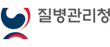
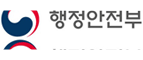

건강
젊음의 3박자를 유지하자
생각, 행동, 외모의 3박자를 항상 젊게 하자.
나는 늘 젊다 생각하고 늙어 간다는 것을 쉽게 인정하지 마라. 나이 들어 기능이 떨어지는 것은 어쩔 수 없지만 마음은 항상 젊게 갖고 행동도 젊게 하자.
사람들이 흔히 하는 말 중에 “이 나이에 어떻게...” “아으, 일주일만 젊었어도...” “나이든 사람이 주책” 등이 있다.
이런 말들을 멀리 하라. 새로운 것을 배우고 도전하는 일에 나이가 무슨 상관인가.
생각이 짧고 철없는 행동을 하면 당연히 주책이지만, 젊게 입고 최신 유행가를 부르고 인생을 즐기는 것은 주책이 아니다.
우리 몸은 정신과 아주 밀접한 관계를 갖고 긴밀히 상호작용을 하고 있다.
몸에 활력이 있어야 자신감과 의욕이 넘치듯이 마음을 젊게 하고 젊게 행동하면 몸도 따라서 젊어진다.
외모를 젊게 유지하면 마음이 젊어지고 마음이 젊어지면 신체의 노화 방지에 도움이 된다.
젊게 생각하고, 젊은이처럼 행동하고, 외모를 젊게 유지하는 것은 큰돈 들이지 않고 쉽게 할 수 있는 노화방지의 시작이다.
담배퇴장
담배는 백해무익이다. 아직도 담배를 피우고 있다면 당장 담배를 끊자. 알면서 담배를 끊지 못하는 사람이 많다고 그냥 넘어갈 수 있는 문제는 아니다.
담배를 끊지 않고는 노화방지나 건강관리를 생각할 수 없다. 담배 피우는 시간만큼 수명은 줄어든다. 당장 끊어라.
스스로 끊을 수 있는 자신이 없다면 금연학교나 금연클리닉을 다녀라. 자녀가 있다면 도움을 요청하라.
그래도 안 되면 금연보조제도를 이용하라. 할 수 있는 모든 방법을 동원해서 담배를 당신에게서 영원히 떠나보내야 한다
과음을 피해라
과음을 하지 말자. 사회생활에서 술을 끊기란 매우 힘들지만 적게 마시는 습관을 갖자.
술을 전혀 마시지 않게 된다면 매우 좋다. 물론 한 잔의 와인이 활력소가 되는 경우도 있다. 문제는 너무 자주, 너무 많이 마시는 것이다.
외우자! 하루 와인 1잔, 맥주 1캔, 소주 2잔 더는 안 된다.
규칙적인 생활은 기본
때가 되면 잠을 자고 밥을 먹도록 알려주는 생체시계가 우리 몸에 있다. 이 시계를 따르는 것도 지혜로운 노화방지법이다.
생체시계나 바이오리듬이 흐트러지지 않도록 규칙적인 생활을 하자. 자신의 상황에 알맞게 잠자는 시간, 일어나는 시간, 밥 먹는 시간, 운동하는 시간을 정해서 꼭 지키도록 하자.
오래 사는 사람들의 사례를 살펴보면 그들은 규칙적인 생활을 했다. 어떤 사람은 시계처럼 아주 정확하게 살았다고 한다.
권장할만한 하루 일과표는 아침 6시 기상, 7시 아침식사, 12시 점심식사, 저녁 6시 저녁식사, 저녁 8시 운동, 밤 10시 취침하는 것이 가장 이상적인 시간표이다.
충분한 수면과 휴식
잠이 보약이고, 미인은 잠꾸러기라는 말을 잊지 말자. 수면 부족에 시달리며 늘 피곤한 사람은 일을 잘 할 수 없다. 건강도 마찬가지이다.
피로가 누적되면 노화가 빨라진다. 내 몸이 휴식을 요구하면 인색하게 굴지 말자. 오후 20~30분 정도 낮잠을 자는 것도 좋다.
호르몬 분비를 생각해보면 밤 9~10시 사이에는 취침하고, 하루 6~8시간 정도 수면 시간을 갖는 것이 가장 이상적이다.
자연식을 중심으로 소식하라
끼니를 거르고 굶는 것은 좋지 않다. 노화방지의 기본은 규칙적인 생활이다. 아침은 충분히 배부르게, 점심은 적당한 양으로, 저녁은 가능한 한 적게 먹으면 건강에 매우 좋다.
설탕, 소금, 흰쌀밥, 흰 밀가루 음식, 화학조미료를 가급적 멀리하자. 고기보다는 콩이나 콩으로 만든 식품, 그리고 생선을 더 많이 먹자.
고기뿐만 아니라 마가린, 버터 등의 섭취도 줄여서 포화지방산의 섭취를 줄이고 과일과 채소를 더 많이 먹는다.
그리고 물은 하루 8잔정도(1.5리터 이상) 마셔야 한다. 물만 잘 마셔도 건강관리에 매우 좋다.
스트레스를 관리하자
스트레스를 잘 관리하는 사람과 그렇지 못한 사람은 최대 16년이나 수명 차이가 난다고 한다. 조급해하거나 안달내며 집착하지 말자.
마음이 평안해야 스트레스가 줄어든다. 완벽주의자들은 다른 사람을 믿고 일을 맡기는 위임의 기술을 연마해야 한다.
모든 일을 자신이 직접 완벽하게 해야 직성이 풀린다고 하면서 사소한 일도 그냥 넘기지 못한다면 그 자체가 질병이다. 질병은 치료할 수 있다.
운동이나 취미생활, 여행, 요가 등으로 그때마다 바로 스트레스를 풀어 쌓이지 않도록 하는 것이 중요하다.
스트레스 받는 상황을 피할 수 없다면 그것을 제대로 풀어주면 된다.
종교를 갖거나 명상을 하는 것도 마음의 안정을 얻어 스트레스를 해소하는 훌륭한 방법이 될 수도 있다.
규칠적인 생활 속 운동
항상 자동차로 이동하고, 항상 책상에 앉아서 일하고, 집에 오면 소파에 누워 리모컨을 끼고 살고 있다면 건강하기를 바라지 말자.
오랫동안 젊음을 유지하고 싶다면 몸을 부지런히 움직여라. 가까운 거리는 되도록 걷고 급하지 않으면 계단으로 다니자.
팔을 힘차게 휘저으면서 빠르게 걷는 파워워킹은 훌륭한 유산소 운동이다. 조깅이나 수영을 할 수 있는 여건이 안 되면 당장 시도해보라.
상당한 운동량을 느낄 수 있다. 운동은 헬스클럽에서만 하는 것이 아니다.
사무실, 집, 출퇴근길을 활용해서 적당한 강도로 유산소운동과 근력강화운동, 유연성운동을 규칙적으로 꾸준히 하면 무려 8~9년이나 젊어지는 효과를 볼 수 있다.
정기적인 건강검진
건강하게 오래 살려면 무엇보다 안 아파야 하고, 그 다음은 병이 있어도 일찍 발견하여 바로 치료해야 한다. 그렇게 하려면 정기적인 건강검진은 필수.
치료하기 어렵다는 암도 초기에 발견되면 치료가 훨씬 수월해진다. 반면에 가볍게 나을 수 있는 병도 꾹꾹 참았다가 키우면 치료가 쉽지 않고 오히려 합병증이 생겨 심각해지는 경우도 있다. 30세가 넘었다면 1년에 한 번은 병원에 가서 진찰을 받고 혈액검사를 하는 것을 습관으로 만들자. 건강검진은 자신과 가족을 위해 게을리 하면 안 되는 습관임을 명심하라.
만약 가족력이 있다면 더더욱 간과하지 말아야 한다.
사고예방습관
건강을 잃는 것이 질병 때문만은 아니다. 아무리 건강관리를 잘해온 사람도 한순간의 부주의로 건강 뿐 아니라 생명을 잃을 수 있다.
사고예방습관을 몸에 길들이는 것이 중요하다. 음주운전은 아주 치명적이다. 운전습관은 사고예방습관의 매우 중요한 부분이다.
생활의 대부분을 차량으로 이동하기 때문이다. 또한 화재 등의 사고위험 요소를 제거하는 것도 중요하다.
지진, 태풍, 홍수 등의 재난사고 발생 시 대피 요령을 알아두는 것도 중요하다. 공공장소에서 비상구와 소화기의 위치를 미리 눈여겨 봐두는 것도 바람직한 습관이다.
공든 탑이 무너지는 것이 바로 예측하지 못한 사고이다. 사고는 예방이 중요하고 그것은 습관이 되어야 한다.
-
 건강 서비스
건강 서비스가사·간병 방문 지원
일상생활이 어려운 저소득층 가정에 요양보호사가 방문하여 가사와 간병 서비스를 제공하는 사업입니다.
- 문의처 : 보건복지부 콜센터(☎129)
- 신청방법 : 방문 및 유선 문의
- 제공유형 : 서비스
-
건강 정보
건강증진프로그램
국민건강증진센터 소속 전문가들이 개인의 체력수준을 파악하고, 개인별 수준에 맞는 맞춤 운동과 영양을 지도해주는 서비스입니다.
- 문의처 : 전국지방의료원연합회(☎1688-1678)
- 신청방법 : 방문, 홈페이지
- 제공유형 : 상담, 정보제공
-
건강 서비스
구강보건
불소도포 및 스케일링, 의치, 구강보건 교육 등을 제공하는 사업입니다.
- 문의처 : 보건복지부 콜센터(☎129)
- 신청방법 : 방문, 유선
- 제공유형 : 서비스, 교육 등
-
건강 서비스
금연클리닉
상담과정을 통하여 금연의 필요성을 인식시키고, 금연과정에서 도움을 주는 금연실천 지원서비스입니다.
- 문의처 : 금연상담전화 (☎1544-9030)
- 신청방법 : 방문
- 제공유형 : 서비스, 정보 등
-
건강 정보
공공의료복지서비스
지역주민의 건강증진과 지역보건의료의 발전을 위해 양질의 공공보건의료서비스를 제공합니다.
- 문의처 : 전국지방의료원연합회(☎1688-1678)
- 신청방법 : 방문, 홈페이지
- 제공유형 : 상담, 정보제공
-
건강 서비스
노인 독감 예방접종
질병에 취약한 어르신들이 무료로 예방접종을 받을 수 있도록 지원하는 제도입니다.
- 문의처 : 보건복지부 콜센터(☎129)
- 신청방법 : 방문, 유선
- 제공유형 : 서비스 등
-
건강 서비스
일반 건강검진
정기적인 건강검진을 통해 질병을 사전에 발견하고 예방하고자 하는 사업입니다.
- 문의처 : 보건복지부 콜센터(☎129)
- 신청방법 : 방문 및 유선문의
- 제공유형 : 서비스
-
건강 정보
정신건강상담
정신건강(정신질환 등) 문제를 예방하고 조기에 발견하여 상담과 재활을 통해 치료받을 수 있도록 지원하는 사업입니다.
- 문의처 : 정신건강위기상담전화(☎1577-0199)
- 신청방법 : 유선
- 제공유형 : 상담, 정보제공
-
 건강 서비스
건강 서비스체력인증 프로그램
국민의 체력 및 건강 증진을 위해 무료로 체력수준을 측정하고, 운동처방과 체력인증을 제공하는 복지서비스입니다.
- 문의처 : 국민체육진흥공단(☎1644-7110)
- 신청방법 : 방문, 유선
- 제공유형 : 서비스 등
-
 건강 관리
건강 관리치매관리
치매를 조기에 치료하고 지속적으로 관리하여 증상 호전 및 증상이 심화 되는 것을 예방하는 사업입니다.
- 문의처 : 치매상담콜센터(☎ 1899-9988)
- 신청방법 : 방문
- 제공유형 : 서비스
-
건강 상담
치매상담전화센터
치매관련 의료·복지기관에서 다년간 현장 경험 및 치매전문교육을 수료한 치매전문상담사들이 치매 관련 정보 및 돌봄 상담을 제공합니다.
- 문의처 : 치매상담콜센터(☎ 1899-9988)
- 신청방법 : 유선
- 제공유형 : 상담, 정보제공
-
건강 서비스
노인맞춤돌봄서비스
만 65세 이상 돌봄이 필요한 노인에게 개인별 맞춤 서비스를 제공합니다.
- 문의처 : 보건복지부 콜센터(☎129)
- 신청방법 : 방문 및 유선문의
- 제공유형 : 서비스
-
건강 서비스
노인 실명예방 관리사업
저소득층 노인 등에게 정밀 안검진을 실시하여 안질환을 조기에 발견 및 치료함으로써 노인들의 실명을 예방하고자 하는 사업입니다.
- 문의처 : 보건복지부 콜센터(☎129)
- 신청방법 : 방문 및 유선문의
- 제공유형 : 서비스
-
건강 서비스
독거노인·중증장애인 응급안전 알림서비스
독거노인과 중증장애인의 가정 내 화재·가스감지기와 활동센서, 응급호출버튼을 설치하여 응급상황에 상시 대응하고 안전을 확인하는 서비스입니다.
- 문의처 : 보건복지부 콜센터(☎129)
- 신청방법 : 방문
- 제공유형 : 서비스
-
건강 정보
노인 무릎인공관절 수술 지원
경제적 이유로 수술을 받지 못하는 분들에게 무릎관절수술을 지원하여 의료비 부담을 경감하고 노인의 건강을 보장하는 제도입니다.
- 문의처 : 노인의료나눔재단(☎1661-6595)
- 신청방법 : 방문
- 제공유형 : 정보
-
건강 상담
고혈압·당뇨병 등록관리
고혈압, 당뇨병 환자의 지속치료율 향상 및 건강행태 개선을 통해 심뇌혈관질환으로 인한 장애 및 사망발생을 감소하고자 하는 사업입니다.
- 문의처 : 보건복지상담센터(☎129)
- 신청방법 : 방문
- 제공유형 : 상담
-
건강 서비스
스포츠강좌이용권
저소득층 청소년에게 스포츠 활동 참여 기회를 보장하여 체력향상과 건전한 여가활동을 지원합니다.
- 문의처 : 국민체육진흥공단(☎02-410-1298~9)
- 신청방법 : 방문, 홈페이지
- 제공유형 : 서비스
-

건강 정보인플루엔자 국가예방접종 지원사업
어르신, 임신부 및 어린이의 인플루엔자 접종률 향상과 질병부담 감소를 위해 인플루엔자 예방접종을 국가에서 지원하는 사업입니다.
- 문의처 : 질병관리청(☎043-719-8398~9)
- 신청방법 : 방문
- 제공유형 : 정보
-
건강 서비스
중독관리통합지원센터
지역사회에 중독관리 통합지원센터를 설치·운영하여 알코올 등 중독자를 위한 치료, 재활 사업 등을 수행합니다.
- 문의처 : 보건복지상담센터(☎129)
- 신청방법 : 유선
- 제공유형 : 서비스
-
건강 정보
재난적 의료비 지원사업
소득수준에 비하여 과도한 의료비 지출로 경제적 어려움을 겪는 가구의 부담완화를 위한 지원 사업입니다.
- 문의처 : 국민건강보험공단(☎1577-1000)
- 신청방법 : 방문
- 제공유형 : 정보
-
건강 정보
고위험 임산부 의료비 지원
고위험 임신의 적정 치료와 관리에 필요한 진료비를 지원하여 임산부의 경제적 부담을 줄이고 건강한 출산을 돕는 서비스입니다.
- 문의처 : 보건복지부 콜센터(☎129)
- 신청방법 : 방문
- 제공유형 : 정보
-

건강 서비스출산지원서비스 통합제공신청(행복출산)
출산 후 받을 수 있는 각종 출산지원 서비스를 한 번에 통합신청하는 서비스를 제공하여 출산가정에 서비스 이용 편의를 제고합니다.
- 문의처 : 행정안전부 지역디지털서비스과(☎044-205-2774)
- 신청방법 : 방문, 홈페이지
- 제공유형 : 서비스
-
건강 서비스
산모·신생아 건강관리 지원사업
전문교육을 받은 건강관리사가 출산가정을 방문해 산모와 신생아의 건강회복을 돕는 서비스입니다.
- 문의처 : 보건복지부 콜센터(☎129)
- 신청방법 : 방문, 홈페이지
- 제공유형 : 서비스
-
건강 서비스
보험급여(건강보험 장애인보조기기)
건강보험 가입자 중 장애인에 대한 특례로 장애인보조기기를 구입할 경우 구입금액 일부를 지원합니다.
- 문의처 : 국민건강보험공단(☎1577-1000)
- 신청방법 : 방문
- 제공유형 : 정보
-

국가건강정보포털
건강/질병 정보, 의료기관 정보, 보건교육 자료 등을 제공합니다.
-

공공보건포털
건강증진, 질병관리, 암관리, 구강보건, 정신보건, 가족건강 등에 관한 정보를 제공합니다.
-

건강인
건강검진, 맞춤형 건강관리, 의약품 정보검색, 운동과 생활 등에 대한 다양한 정보를 제공합니다.
-

건강보험심사평가원
병원･약국 찾기, 병원평가정보, 진료비 정보 등을 제공합니다.
-

한국건강관리협회
건강검진, 건강교육에 대한 정보를 제공합니다.
-

국가암정보센터
암 예방, 검진, 치료, 암환자 생활 등 암과 관련된 여러 정보를 제공합니다.
-

대한당뇨병학회
당뇨병 정보, 식생활, 운동 등 당뇨병과 관련한 여러 정보를 제공합니다.
-
중앙치매센터
치매 예방, 시설, 교육 등 치매와 관련한 여러 정보를 제공합니다.
-
국민체력100 체력인증센터
체력측정, 체력평가, 운동처방, 체력인증 등의 서비스를 제공합니다.
-

식품안전나라
식품안전정보, 건강기능식품 정보, 영양정보, 식품전문정보 등을 제공합니다.